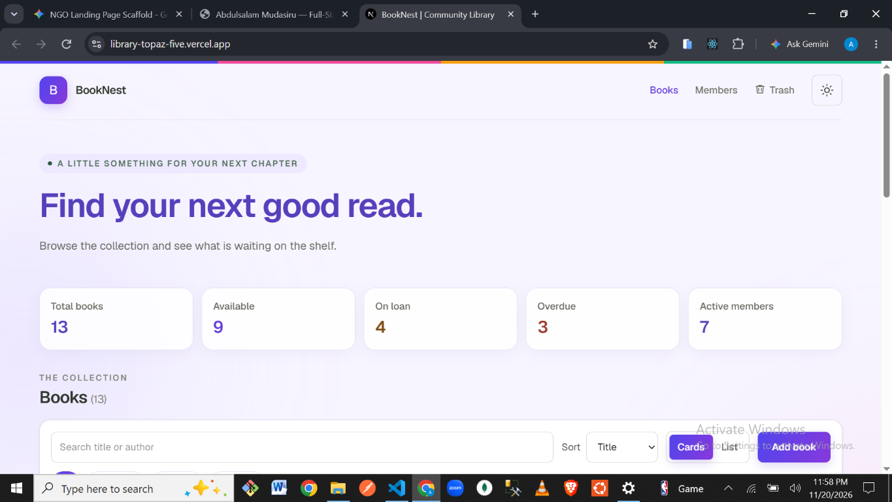

A comprehensive library management system built to track catalog inventory, member records, and book lending workflows in real time.
- ▸ Tracks real-time book availability and active library members
- ▸ Manages peer-to-peer book lending states with PostgreSQL persistence
React
TypeScript
PostgreSQL
Supabase
Live Demo →